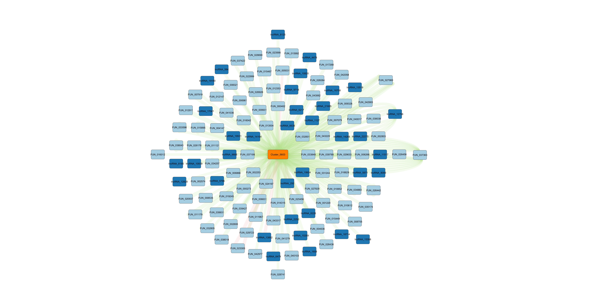
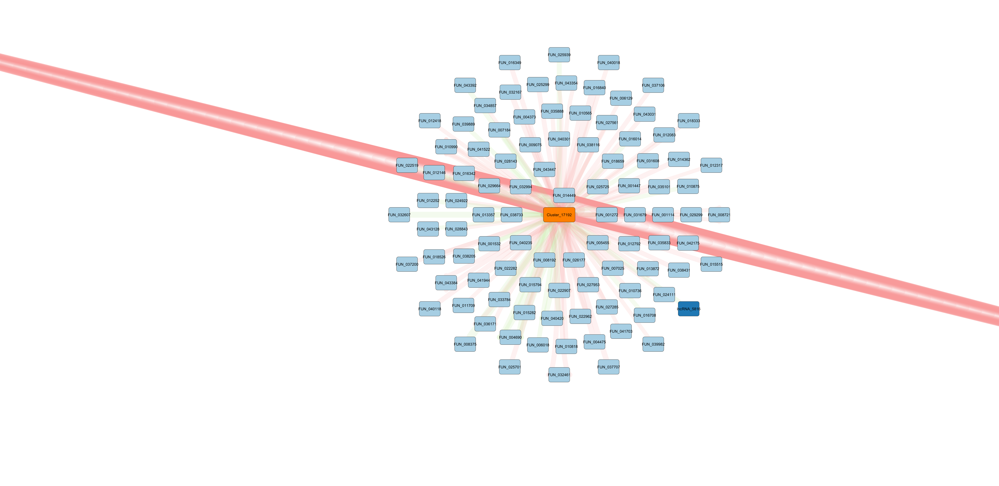

Timeseries molecular: Format input files for Cytoscape
E5-coral
Author
Kathleen Durkin
Published
April 28, 2025
For Cytoscape I need two inputs, an “Edges.csv” and a “Nodes.csv”.
The “edges”Edges” file should associate each node with all other nodes it connects to. It should also contain edge-specific metadata. For example:
source
target
correlation
correlation magnitude
correlation direction
correlation pval
binding pval
miR-100
FUN001
-0.9
0.9
-1
0.001
0.02
miR-100
FUN002
0.85
0.85
1
0.02
0.03
lncRNA01
FUN001
-0.95
0.95
-1
0.01
0.01
Note that there may be duplicates in both the “source” and “target” columns, but the combinations of source-target should be unique.
The “Nodes” file contains metadata for every node included in the plot. Importantly, the set of nodes listed int he “Nodes” file should match exactly the set of nodes included in the “Edges” document. For example:
id
type
FUN001
gene
FUN002
gene
miR-100
miRNA
lncRNA01
lncRNA
I’ll need the following files to compile the Cytoscape inputs:
miRNA interaction file (contains binding and coexpression information for miRNA-gene pairs): timeseries_molecular/D-Apul/output/14.1-Apul-miRNA-mRNA-coexpression-additional_inputs/miRanda-PCC-significant-mRNA_3UTR_5UTR.csv
lncRNA interaction file (contains binding and coexpression information for miRNA-lncRNA pairs): timeseries_molecular/D-Apul/output/14.2-Apul-miRNA-lncRNA-coexpression/miRanda-PCC-significant-miRNA_lncRNA.csv
I’m haven’t predicted lncRNA-gene interactions at this point, but if I decide to I would also need that file.
Load packages:
library(dplyr)
Warning: package 'dplyr' was built under R version 4.2.3
Attaching package: 'dplyr'
The following objects are masked from 'package:stats':
filter, lag
The following objects are masked from 'package:base':
intersect, setdiff, setequal, union
library(tidyr)
Warning: package 'tidyr' was built under R version 4.2.3
Load files:
miRNA_gene <-read.csv("https://raw.githubusercontent.com/urol-e5/timeseries_molecular/refs/heads/main/D-Apul/output/14.1-Apul-miRNA-mRNA-coexpression-additional_inputs/miRanda-PCC-significant-mRNA_3UTR_5UTR.csv")# Remove NA rowsmiRNA_gene <- miRNA_gene %>%filter(!is.na(mirna))miRNA_lncRNA <-read.csv("https://raw.githubusercontent.com/urol-e5/timeseries_molecular/refs/heads/main/D-Apul/output/14.2-Apul-miRNA-lncRNA-coexpression/miRanda-PCC-significant-miRNA_lncRNA.csv")
All interactions
Format “Edges” file:
# Add correlation magnitude and direction columnsmiRNA_gene$PCC_magnitude <-abs(miRNA_gene$PCC.cor)miRNA_gene$PCC_direction <-sign(miRNA_gene$PCC.cor)miRNA_gene$Alignment <-paste0(miRNA_gene$Target, ";", miRNA_gene$Query_Aln, ";", miRNA_gene$Subject_Aln)# Select columns I want to keep in Edges filemiRNA_gene_edges <- miRNA_gene %>%select(mirna, X4, Alignment, Energy_Kcal_Mol, Al_Len, Subject_Identity, Query_Identity, PCC.cor, PCC_magnitude, PCC_direction, p_value)# rename columnsmiRNA_gene_edges <- miRNA_gene_edges %>%rename(source = mirna, target = X4)# Add correlation magnitude and direction columnsmiRNA_lncRNA$PCC_magnitude <-abs(miRNA_lncRNA$PCC.cor)miRNA_lncRNA$PCC_direction <-sign(miRNA_lncRNA$PCC.cor)miRNA_lncRNA$Alignment <-paste0(miRNA_lncRNA$Target, ";", miRNA_lncRNA$Query_Aln, ";", miRNA_lncRNA$Subject_Aln)# Select columns I want to keep in Edges file (ensure in same order as in the miRNA_gene_edges file)miRNA_lncRNA_edges <- miRNA_lncRNA %>%select(mirna, lncRNA.x, Alignment, Energy_Kcal_Mol, Al_Len, Subject_Identity, Query_Identity, PCC.cor, PCC_magnitude, PCC_direction, p_value)# rename columnsmiRNA_lncRNA_edges <- miRNA_lncRNA_edges %>%rename(source = mirna, target = lncRNA.x)# Combine miRNA-gene edges and miRNA-lncRNA edgesedges <-rbind(miRNA_gene_edges, miRNA_lncRNA_edges)# Ensure we have no duplicate rowsnrow(edges)
# Make a df that contains all miRNA, genes, and lncRNA listed in the `source` and `target` columns of `edges`nodes <-data.frame(# The `unique` argument ensures we remove duplicatesid =unique(unname(unlist(edges[, c("source", "target")]))))# Add column identifying the type of each node (miRNA, lncRNA, or gene)nodes <- nodes %>%mutate(type =case_when(grepl("Cluster", id) ~"miRNA",grepl("FUN", id) ~"gene",grepl("lncRNA", id) ~"lncRNA",TRUE~"other" ))# Check formatting/contentshead(nodes)
id type
1 Cluster_10452 miRNA
2 Cluster_11565 miRNA
3 Cluster_12081 miRNA
4 Cluster_12083 miRNA
5 Cluster_12087 miRNA
6 Cluster_13327 miRNA
# Make a df that contains all miRNA, genes, and lncRNA listed in the `source` and `target` columns of `edges`nodes_pval_0.01<-data.frame(# The `unique` argument ensures we remove duplicatesid =unique(unname(unlist(edges_pval_0.01[, c("source", "target")]))))# Add column identifying the type of each node (miRNA, lncRNA, or gene)nodes_pval_0.01<- nodes_pval_0.01%>%mutate(type =case_when(grepl("Cluster", id) ~"miRNA",grepl("FUN", id) ~"gene",grepl("lncRNA", id) ~"lncRNA",TRUE~"other" ))
# Make a df that contains all miRNA, genes, and lncRNA listed in the `source` and `target` columns of `edges`nodes_PCC_0.5<-data.frame(# The `unique` argument ensures we remove duplicatesid =unique(unname(unlist(edges_PCC_0.5[, c("source", "target")]))))# Add column identifying the type of each node (miRNA, lncRNA, or gene)nodes_PCC_0.5<- nodes_PCC_0.5%>%mutate(type =case_when(grepl("Cluster", id) ~"miRNA",grepl("FUN", id) ~"gene",grepl("lncRNA", id) ~"lncRNA",TRUE~"other" ))
# Make a df that contains all miRNA, genes, and lncRNA listed in the `source` and `target` columns of `edges`nodes_PCC_0.6<-data.frame(# The `unique` argument ensures we remove duplicatesid =unique(unname(unlist(edges_PCC_0.6[, c("source", "target")]))))# Add column identifying the type of each node (miRNA, lncRNA, or gene)nodes_PCC_0.6<- nodes_PCC_0.6%>%mutate(type =case_when(grepl("Cluster", id) ~"miRNA",grepl("FUN", id) ~"gene",grepl("lncRNA", id) ~"lncRNA",TRUE~"other" ))
# Make a df that contains all miRNA, genes, and lncRNA listed in the `source` and `target` columns of `edges`nodes_PCC_0.7<-data.frame(# The `unique` argument ensures we remove duplicatesid =unique(unname(unlist(edges_PCC_0.7[, c("source", "target")]))))# Add column identifying the type of each node (miRNA, lncRNA, or gene)nodes_PCC_0.7<- nodes_PCC_0.7%>%mutate(type =case_when(grepl("Cluster", id) ~"miRNA",grepl("FUN", id) ~"gene",grepl("lncRNA", id) ~"lncRNA",TRUE~"other" ))
# Make a df that contains all miRNA, genes, and lncRNA listed in the `source` and `target` columns of `edges`nodes_PCC_0.8<-data.frame(# The `unique` argument ensures we remove duplicatesid =unique(unname(unlist(edges_PCC_0.8[, c("source", "target")]))))# Add column identifying the type of each node (miRNA, lncRNA, or gene)nodes_PCC_0.8<- nodes_PCC_0.8%>%mutate(type =case_when(grepl("Cluster", id) ~"miRNA",grepl("FUN", id) ~"gene",grepl("lncRNA", id) ~"lncRNA",TRUE~"other" ))
Open Cytoscape and select File > Import > Network from File…
Select “Edges” file. Ensure The source and target columns are appropriately identified before loading the file.
To load “Nodes” file, select File > Import > Table from File…
Results
Below is a the network of miRNA-gene and miRNA-lncRNA interactions that are predicted to bind by miRanda, and which have an expression correlation coefficient above 0.5.
The network is displayed using the yFiles Organic Layout, with nodes colored by type (miRNA = orange, lncRNA = dark blue, gene = light blue), and with edges colored by correlation direction (negative = red, positive = green) and weighted by correlation magnitude.
We can see some interesting patterns!
Cluster_4752 stands out because it has many putative interactions (mostly genes), with primarily negatively correlated expression. This suggests the miRNA is reducing expression of its target genes through translational repression or mRNA degradation. Note also that this miRNA matches miR-2023.

Cluster_5603 appears to putatively interact with one of the largest proportions of lncRNA. It matches the previously described miRNA “Novel-5_3p”.

Cluster_17192 is primarily of interest becasue it matches miR-100, a highly conserved and well described miRNA. It also becomes apparent after isolation that one of the putative gene targets, FUN_014449, has a remarkable number of edges connecting it to Cluster_17192. This indicates that miRanda output a significant likelihood of Cluster_17192 binding to many different location on the mRNA